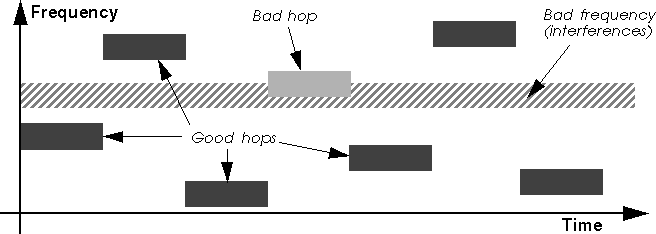
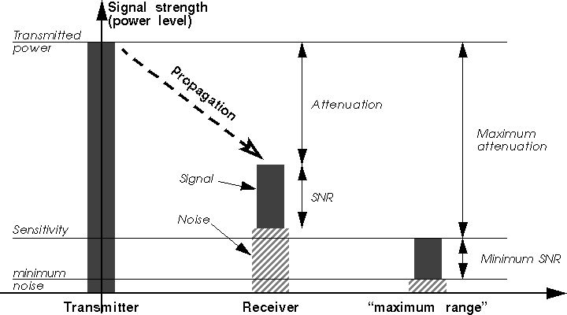

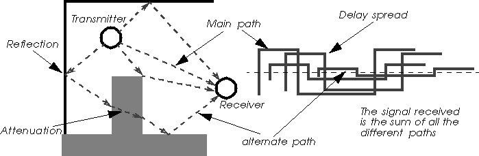

|
These organisations, aware of the prospects of local radio communications for individual users, have allocated some specific frequency bands to be used in a more flexible way. The oldest and most commonly used ones are located at 900 MHz and 2.4 GHz and called the ISM bands (Industrial, Scientific and Medical). The main characteristic of these bands is that they are unlicensed, this means that the user is free to use them without having to register or to pay anything (apart from the radio hardware).
Of course, to avoid abuses, these organisations have imposed a set of rules for these frequency bands and only the products certified to conform to those rules are allowed to emit in the bands. These rules specify at least the maximum power transmitted in the band and the out of band emissions (to not pollute adjacent bands). The ISM bands rules specify as well that Spread Spectrum has to be used (either Direct Sequence or Frequency Hopping, see chapter 4.3), and how the channels are defined, to allow the peaceful cohabitation of different systems (that's the theory).
The Spread Spectrum rules mandate Direct Sequence systems must spread their signal at least 11 times, and that Frequency Hopping systems stay on a channel a maximum of 0.4 s and use 75 channels at minimum in each 30 s period. But, don't trust me, check the exact wording of the rules...
These rules may vary depending on the country : the FCC allocates both the 900 MHz and 2.4 GHz band with 1 W maximum power, whereas the ETSI allocates only the 2.4 GHz band with 100 mW maximum power (900 MHz is used for GSM cell phones in Europe). The 2.4 GHz band is available worldwide and the regulations are mostly compatible between the different authorities (usually 80 MHz of bandwidth between 2.4 GHz and 2.48 GHz). The main exception is Japan which has some additional constraints.
The Spread Spectrum rules originally allowed around 2 Mb/s maximum bit rate (both FH and DS), but the Direct Sequence people managed to find a loophole and now offer 11 Mb/s systems (see chapter 4.7.3).
Because these bands are "free", they may be heavily polluted by other unlicensed systems. The 2.4 GHz band also suffers from the microwave oven radiations (this explains why it was given for free).
Please note that the regulation for unlicensed bands is quite
different from the bands reserved for radio amateurs (HAM). HAM people
are not happy because their regulations are much more strict (they
have to pass an examination including morse code and follow stricter
etiquette) and the bandwidth available to them much more scarce.
4.2 5 GHz frequency bands (HiperLan and UNII band)
The 5 GHz unlicensed bands are another very complicated story.
ETSI was the first to open the 5 GHz band, and so far, the 5.2 GHz band is dedicated to HiperLan (see chapter 6.3), and the 5.4 GHz band reserved for HiperLan II (alias BRAN, see chapter 6.4). As they have done for GSM and DECT, only systems that fully conform to those standards (Phy and MAC) may operate in the band.
In the States, the FCC has allocated the band between 5.2 and 5.8 GHz (UNII band) with some very liberal rules (no spread Spectrum mandated, no channels allocated). To limit systems, they have introduced complicated power rules, making the use of around 20 MHz bandwidth optimal (system using less bandwidth can transmit less power, system using more bandwidth don't get more power), and divided the band in 3 chunks, for low power systems (5.2 GHz), medium power (5.4 GHz) and high power (5.6 GHz). Some people have tried to come up with some "etiquette" for the UNII band (stricter set of rules) but they couldn't accommodate the conflicting requirement of all parties.
In the 5 GHz band, because of the availability of more bandwidth, higher speed are possible (10 to 40 Mb/s). But, operating in a higher frequency band increases the noise level, obstacles and walls are more opaque to transmissions (see chapter 4.8.4), and a higher bit rate require more SNR (Signal Noise Ratio - see chapter 4.6.4), which means a reduced range compared to 2.4 GHZ products, which is bad news.
In summary, in Europe it's HiperLan or nothing. In the USA, the low
power chunk of the UNII band (5.2 GHz) is likely to be used by 802.11
at 5 GHz (see chapter 6.2) and HiperLan, and people are
unlikely to propose yet another standard. The high power chunk will be
used by wireless distribution systems, and both type of system will
fight for the medium power chunk...
4.3 Spread Spectrum techniques
Spread spectrum is a technique (mainly pioneered by the army)
trading bandwidth for reliability. The goal is to use more bandwidth
than the system really needs for transmission to reduce the impact of
localised interferences (bad frequencies) on the system. Spread
spectrum, as it prevents one system to use the full bandwidth
capacity, also force independant systems to share the bandwidth (in a
mostly fair way). In the 2.4 GHz band, the regulation specifies that
systems have to use one of the two main spread spectrum
technique : Direct Sequence or Frequency Hopping.
Which one is better ? This is the main technical war between the radio
LAN vendors. Everybody, of course, argue that its own technology is
better. For now, no one has come with some decisive arguments about
the comparative performance and robustness of these two technologies
(estimating performance of radio systems is a tricky job). Of course,
comparing products doesn't make sense because the performance of a
system depend on many other components (the MAC protocol, the
signalling rate), the optimisation chosen (performance versus
reliability versus cost) and the actual implementation (hum, hum...).
4.3.1 Direct Sequence
The principle of Direct Sequence is to spread the signal
on a larger band by multiplexing it with a signature (the code), to
minimise localised interference and background noise.
The system works over a fixed large channel. To spread the signal, each bit of the packet to transmit is sur-modulated by a code (a fast repetitive pattern). In the receiver, the original signal is recovered by receiving the whole spread channel (averaging effect) and demodulating by the same code (processing gain). For a 2 Mb/s signalling rate modulated by a 11 chips code (like the Wavelan), the result is a signal spread over 22 MHz of bandwidth.
Any narrowband interferer, because it uses only a small part of the total bandwidth used by the system, will appear much weaker to the Direct Sequence system (I think it will be much clearer if you look at the picture below). Moreover, the demodulator use the same code as the transmitter to match the received signal, which decrease further signals not modulated by the code (this is called the processing gain of the code, 11 chips as used in 802.11 gives in theory a 10 dB processing gain).
|
Direct Sequence is also the principle used by CDMA (Code Division Multiple Access - one of the cellular phone technique), but in CDMA each individual phone channel is given a different code on the same frequency. By having each channel having a orthogonal code and the same received power (so, using power control), it is possible to recover every CDMA channel using its code. The only limit of the scheme is that the noise is proportional of the number of channels (so the degradation with increased capacity is graceful). The configuration also needs to be a star topology (to use power control), which doesn't suit well Wireless LAN.
The spreading with the code produces a faster modulation, therefore a DS modem is quite complicated (it usually require faster circuits and a DSP or equivalent logic for the spreading). One the other hand, the fact of having one single fixed channel (as opposed to Frequency Hopping) eases the task of the higher layers (MAC).
Because it uses a large channel, a Direct Sequence system has only a
few channels available in the bandwidth (3 for the Wavelan - on
different frequencies). Those channels are totally separate (they
don't generate interferences on each other). Direct Sequence also
offers the possibility to use partially overlapping channels for
systems in adjacent areas, increasing slightly the number of
channels. But this last solution tends to increase the noise and
decrease the performance of the system, because all those systems
usually operate with the same code (and not one code per frequency).
4.3.2 Frequency Hopping
Frequency Hopping uses a set of narrow channels and walk
through all of them in sequence. For example, the 2.4 GHz ISM band is
divided in 79 channels of 1 MHz. Periodically (every 20 to 400 ms
usually), the system hop to a new channel, following a
predetermined cyclic hopping pattern.
The system avoids interferences by never staying on the same channel : if a channel is bad, the system might not be able to use it and just waits for the next good channel. As the pattern makes the whole network hop through all the bandwidth available, the system average the effect of bad channels over the time.
This is where Frequency Hopping has a slight advantage over Direct Sequence : in the very specific case of strong narrow-band interferer present in the band, Frequency Hopping loose some hops but will manage to get some hops on good frequencies. On the other hand, if the noise is stronger than the received signal, there is not much that the Direct Sequence node can do. But, for most interferers at common power levels, it's not totally clear which will give the highest performance (it depends).

On the other hand, Frequency Hopping introduces more complications at the MAC level : scanning to find the network at the initialisation (a moving target), keeping the synchronisation of the nodes, managing the hops.
This complexity of the MAC has a price in term of performance, and the Frequency Hopping mechanism has some overhead. There is management overhead to manage the synchronisation, and there is some dead time in the transmission when the system hop. In theory, this can be kept to a minimum.
Also, the Frequency Hopping system have to include a process called whitening, to conform to radio transmission constraints, inserting some regular stuff bits in each packets (to avoid long strings of 0 or 1), adding more overhead (on the other a Direct Sequence signal is withened by the Direct Sequence process).
The Frequency Hopping technique can accommodate many more independent systems collocated in the same area than the Direct Sequence technique by using different hopping pattern (up to 15 for the RangeLan2). On the other hand, the different hopping patterns of Frequency Hopping will "collide" on the same (or adjacent) frequency from time to time. The collisions of the Frequency Hopping patterns may reduce the throughput significantly : the systems "colliding" on the same (or an adjacent) frequency will have to share the bandwidth between them (see discussions on aggregate throughput in chapter 5.4.6).
In term of bandwidth sharing, the two technologies perform really differently. The same is true in term of resistance to interferences (it depend on the strength and pattern of the interferer). Direct Sequence systems tend also to have a lower overhead on the air.
In summary, most vendors are going to Frequency Hopping because of the
lower cost and try to convince people that it is better, and vendors
having heavily invested in Direct Sequence try to push their raw
performance advantage (especially now with 802.11 HR, see chapter 6.2),
so it is still a kind of religion war.
4.4 Diversity
Diversity is a generic concept of introducing redundancy in the
system to overcome noise and to increase the reliability of the
system. For example, spread spectrum is a type of frequency
diversity, using more bandwidth than necessary to avoid bad parts of
the spectrum. Retransmission is a very usual temporal
diversity. FEC (Forward Error Correction) is another kind of
temporal diversity. Very often, "diversity" is associated
with antenna diversity only. Antenna diversity is only one form
of diversity (a spacial diversity).
Antenna diversity means that the radio device has two (or more)
antennas. The transmission conditions on the channel vary a lot over
the time. The channel tends to fade in and fade out (see chapter 4.8.1),
so the device has moment of good reception and moment of bad
reception. But, these conditions are also dependant on the spacial
position. By having two antennas, even quite close (a few cm), the
condition at each antenna is very often totally different. One antenna
may give a poor signal and the other a good one, and a few ms later it
might be the reverse. So, before receiving each packet, the receiver
chooses the best antenna of the two by comparing the signal strengths,
and so can avoid most of the fade out periods.
4.5 Directional antennas
Most wireless LANs use omnidirectional antennas, but may offer
directional antennas in option. Instead of receiving in every
directions, the directional antenna favour reception in a more or less
narrow angle. The narrower the angle is, the higher the gain is (and
the range), because you get rid of more unwanted emissions and
background noise in the other directions.
With directional antennas, it is quite common to have a few kilometres of range in line of sight with products in the ISM band. The first problem is that you must of course point each antenna towards the node you intend to communicate with (depending on the angle this needs to be more or less precise). The second problem is that very directional antennas tend to be quite big.
This is why directional antennas are only suited for fixed point to point links (products like Wireless Bridges). For most networks where nodes need to talk to different other nodes in different directions and might need to move, omnidirectional antennas are much more practical.
Sectored antennas are very similar to directional antennas, and heavily used in cellular phone base stations. A set of wide angle directional antenna are assembled on a vertical pole, each one covering one portion of the horizon (a sector, for example 3 antennas 120 degrees wide). When talking to a specific node, the base station just select the sector of the sectored antenna that cover this node, giving the benefit of directionality without sacrificing the coverage.
People are also investigating beam forming antennas. This is an
adaptive directional antenna, using a set of unidirectional antennas
and interferometry to enhance the signal. Basically, by adding all the
signal of the different antennas with specific offset (to compensate
propagation delay), it is possible to aim the system towards a
specific direction and have the same benefit as directional
antenna. As this system is adaptive and dynamic, it could be used for
Wireless LANs
4.6 Range issues
The propagation of radio transmissions is influenced by many
factors. Walls and floors tend to decrease and reflect the signal, and
background noise makes it more difficult to demodulate. In a typical
environment, all the shadows due to obstacles and reflections on the
walls create a very unpredictable quality of transmission for each
specific location. The channel quality also vary quite a lot over the
time (fading, see chapter 4.8.1) because the environment is not static.
Because of the way radio transmissions are affected by the environment in such a complex way, it is quite difficult to predict the comportment of the system and to define a range. You will have some good, fair and bad area/period, the closer the two devices are the more likely they are to be in a good one.
Most vendors attempt to define a range for their products, which is the average maximum distance in usual operating conditions between two nodes (diameter of a cell - radio neighbourhood). Some even give different ranges for different typical environments. For example : open environment (no obstacles), semi-open (cubicles) and closed (real walls).
But there is no standard and common operating procedure to measure a range (except in free space, but this is useless), so we can't really compare the different products from the ranges as indicated in their data-sheets, and you must take these values with a bit of caution.
If you want to compare products in term of range performance, you must
look closely at the transmitted power and sensitivity
values. These are some measurable characteristics of the hardware
which indicate the performance of the product in that respect. In
fact, I would also recommend to do some benchmark of different
products in your own environment to get a better idea of what coverage
you can expect.
4.6.1 Transmitted power
The transmitted power is the strength of the emissions measured
in Watts (or milliWatts). We have already seen that the regulations
limit this power (see chapter 4.1). Products having a high transmit power
will also be likely to drain the batteries faster. But, having a high
transmit power will help to emit signals stronger than the interferers
in the band (and other systems).
Having a strong transmitted power has some drawback for frequency
reuse. This means that if you want to put many different networks
in areas close to each other, they will tend to pollute each
other. With less transmitted power you can make smaller cells. This is
why some product may allow to select different transmitted powers.
4.6.2 Sensitivity
The sensitivity is the measure of the weakest signal that may
be reliably heard on the channel by the receiver (it is able to read
the bits from the antenna with a low error probability). This
indicates the performance of the receiver, and the lower the value the
better the hardware (higher in absolute value). The figure is given in
dBm, the magic formula to transform power in Watts to dBm is :
P dBm = 30 + 10.log(P W). Usual values are around -80 dBm (the
lowest, the better, for example -90 dBm is better).
One problem is that all manufacturer and standards use the same
reference to define sensitivity. 802.11 specify the sensitivity as the
point when the system suffer from 3 % of packets losses (for packets
of 400 Bytes in a Gaussian channel). Some products use 50 % packet
losses as the definition of sensitivity, which of course gives a
better number. The use of a Gaussian channel also gives better numbers
(the use of a Rayleigh Fading channel with antenna diversity would
give results approximately 7 dB worse).
4.6.3 Attenuation
Knowing those two values, you may calculate the maximum possible
attenuation of the packets (this is the difference between the
two values, in dB). The larger the maximum possible attenuation, the
larger the range. For a 100 mW system with a -80 dBm sensitivity, we
have 100 dB maximum attenuation.
The attenuation is the decrease of signal strength between the transmitter and the receiver. In the air, the attenuation is simply proportional to the square of the distance. If you know exactly the composition of the signal paths between the two nodes (distance in the air, type of obstacles, reflections...), you may calculate the attenuation. But usually it is quite tricky to determine the attenuation as a function of the distance, especially that the signal may be the composite from different propagation paths (see chapter 4.8.4). Moreover, the variation in the environment make the attenuation change over the time (see chapter 4.8.1).
Because of this non straightforward relationship, knowing the maximum possible attenuation won't give you the maximum range, but just a feeling. The only safe thing is that products with a greater maximum possible attenuation are very likely to have a larger range.

So, the link between sensitivity and minimum SNR is quite obvious. If
you add the minimum SNR to the background noise in the receiver
(hardware noise and background noise on the channel), you will find
the sensitivity. So, having a low sensitivity means also a low minimum
SNR, so the ability to receive reliably packets with potentially
higher interference strength, which explain why the sensitivity is
such an important performance characteristic.
4.7 Modulations
The main job of the radio modem is to transform bits into modulations
of the radio waves, but there is many way to do that. Most systems use
a carrier (a base frequency) and modulate it. The simplest way is to
modulate the strength of the signal (Amplitude Modulation), but as the
attenuation of the channel is usually not constant (see chapter 4.6.3),
this lead to poor performance. Most modern systems modulate either the
frequency of the signal or the phase of the signal (frequency offset),
which gives much greater performance.
4.7.1 Multi-rate systems
If you want a better throughput, the most simple way is to use more
bandwidth. The problem is that the ISM spread spectrum regulations
limits the amount of bandwidth usable (1 MHz channels for Frequency
Hopping). Also, in most hardware the filters used to recover the
signal are fixed, so the channel width is fixed. This limit the rate
of symbols that you can use (1 Mbauds for Frequency Hopping).
So, how could some Frequency Hopping systems offer 3 Mb/s in 1 MHz channels ? The use of more complex modulation schemes allows to overcome this limitation. For example, the standard 2FSK allows to put 1 bit per symbol, whereas 4FSK allows 2 bits per symbols, doubling the signalling rate.
Of course, there is a drawback : a more complex modulation scheme is less robust and will require a higher received Signal to Noise Ratio to work (SNR - see chapter 4.6.4). When going from 2FSK to 4FSK, each time the receiver reads a symbol, instead of having to distinguish two fairly separated values, now it has to distinguish 4 closer to each other (see chapter 4.7.2). More complex modulations stuff even more values in the same space, but then the slightest perturbation of the signal (noises) will make the receiver reads the wrong value for the symbol.
So, we have the choice between a high speed modulation which requires strong received signal and a slower modulation which works even on weak signals. In other words, the higher the signalling rate, the shorter the range.
Because users want both range and speed, some vendors have build some
systems using multiple levels of modulations, changing automatically
from the fast modulation to the robust one depending on the channel
conditions (when a packet fail, the rate is automatically
reduced). This introduces a bit of overhead and complexity, but the
system offer a much better performance characteristic (range or
speed).
4.7.2 2FSK and 4FSK
2FSK (Frequency Shift Keying) is the simplest form of frequency
modulation. Basically, the system use two different frequencies for
the values 0 and 1 of each bit. For example, if B is the base
frequency (the carrier) and d the carrier deviation, each time
the system want to transmit a 0 it creates a waveform of frequency
B-d (a symbol), and each time it want to transmit a 1 it
creates a waveform of frequency B+d. The receiver just need to
measure the deviation of the signal to the reference frequency
B to know which value of the bit was transmitted.

Measuring this deviation is not easy, because each symbol is very short in time : the transmitter change it for every bit to transmit at the speed given by the baudrate. The receiver needs of course to know when the bits are transmitted, which require timing synchronisation on the received signal. The carrier deviation has to be chosen carefully to enable enough differentiation between the two symbols but to have the signal generated fitting in the band allocated to it (usually around one hundred kHz for a 1 MHz channel at 2.4 GHz).
As mentioned above, it is possible to put more than one bit per symbol (see chapter 4.7.1), like using 4FSK. 4FSK use 4 different symbols having 4 different carrier deviation, B+1/2d, B-1/2d, B+3/2d and B-3/2d, each symbol is mapped to a combination of two bits (00, 01, 10, 11).
Note that the difference in frequency between each symbol for 4FSK is
smaller than for 2FSK, to allow the signal to fit in roughly the same
channel width. Between each symbol, the difference is only d
for 2FSK, instead of 2d for 4FSK, which explains why 4FSK is
more sensitive and requires a better SNR (see chapter 4.6.4).
4.7.3 802.11 HR (11 Mb/s)
When 802.11 was eventually released, 1 and 2 Mb/s was no longer
considered as decent speed for Wireless LAN and people were already
talking of using the 5 GHz band for higher throughput (HiperLan and
802.11 at 5 GHz). However, the migration from 2.4 GHz to 5 GHz
requires to change all nodes and doesn't provide backward
compatibility (it's mot the same frequency band, so a new modem is
necessary).
Therefore, people producing 2.4 GHz products tried to find way to extend the life of their technology (mostly Harris and Lucent). They cheated with the Spread Spectrum rules, and got away with it, enabling them to offer 5 and 11 Mb/s systems.
Basically, a DS system generate signal which occupy around 22 MHz of bandwidth. They designed their 11 Mb/s system to generate signal similar to a standard DS system. Then, they went to the FC and claimed that as their new system was generating the same type of signal as a DS system, it's impact on other systems in the band was the same, so it should be authorised as well. After a bit of negociation, the FCC did accept this extension of the rule. Note that some FH vendors also tried to get 5 MHz FH channels in the 2.4 GHz band but failed to obtain it.
Lucent came up with the simplest solution, PPM (Pulse Position Modulation), which is included in their "Turbo" line of products, offering 5 and 10 Mb/s. PPM simply shift the code used in the DS modem, each position can encode some more bits. PPM is simple, cheap, but low performance.
Harris tried MBOK (M-ary Bi-Orthogonal Keying), offering 5.5 Mb/s and 11 Mb/s, which is a more complex modulation than PPM, so more expensive and more robust. The signal produced by the transmitter is also less similar to a DS signal.
They both went back to the 802.11 group, but neither wanted to adopt the system of the other. So, they settled down on yet another modulation, CCK (Complementary Code Keying), which eventually got adopted for the 802.11 HR standard and approved by the FCC. CCK is the most complex of the 3 modulations, offering better performance, but higher cost, and signals even less similar to the original DS signals.
802.11 HR offer 11 and 5.5 Mb/s rate (using the CCK modulation)
and is backward compatible with original 802.11 DS systems. However,
the higher bit rate require a higher SNR, which reduce the range
significantly. Note as well that because of backward compatibility
most of the underlying protocol is still designed for the 1 Mb/s
standard (headers and management frames are 1 Mb/s, contention window
size is still based on 1 Mb/s systems), which mean that at higher rate
the overhead of the system is much higher.
4.7.4 OFDM
People building high speed system like HiperLan were
complaining that adding to their products an Equaliser necessary to
combat delay spread (see chapter 4.8.4) was a major cost. So, they invented a
new technique to get similar or better performance at lower cost,
called OFDM (Orthogonal Frequency Division Multiplex).
Using equalisation is a post-processing technique, which tries to overcome delay spread by brute force. OFDM is a pre-processing technique, where the signal transmitted on the band is prepared in such a way that the impact of delay spread is reduced.
Delay spread is damaging because the symbol time is very short, so OFDM will only use large symbol time. However, by increasing the symbol time we reduce the bit-rate. To overcome this constraint, OFDM transmit the symbols no longer serially but in parallel ! This way, we have very high bit rate with large symbol time.
OFDM use a set of subcarrier frequencies, the frequencies being orthogonal. Each subcarrier is modulated individually, the bit rate and signal strength of each subcarrier can be adapted to get maximum performance of the system (we put more bits on the good subcarriers and less on the bad ones). Then, the system splits the bits to transmit between the subcarriers, each subcarrier is modulated and then combined to produce the transmitted signal (using a Fast Fourrier Transform).
The main drawback of OFDM is that it require a greater frequency accuracy (we traded timing accuracy to frequency accuracy). As the OFDM signal contains many subcarrier very close to each other in frequency, the system must be very accurate to match all of them.
The first use of OFDM was in the HiperLan II standard (see chapter 6.4),
but since 802.11 at 5 GHz has adapted a very similar modulation (see
chapter 6.2).
4.8 Interferences and noises
In the previous section we have examined what does affect the range
performance of a system. Unfortunately, other phenomenon on the radio
waves affect the performance of a system (even if they may not reduce
the range), and all kind of interferences and background radio noises
will impact the system.
4.8.1 Fading
Fading defines all the temporal variations of the signal
attenuation due to its propagation in a real environment like an
office or a house. The radio signal interact in various way with the
environment (see chapter 4.6 and chapter 4.8.4), so vary a lot with the environment
configuration. Moving a few centimetres can make a big different in
signal quality (see chapter 4.4).
Moreover, the environment is not static, humans are moving, things are moving, and the nodes may be moving themselves. All these small movements may produce important variations in time in the attenuation of the signal. For example the propagation between two nodes may alternate from poor to good on a packet basis.
People usually describe the pattern of attenuation with a Rayleigh fading model (case where there is no line of sight) or a Ricean model (line of sight + additional paths). The main consequence is that transmission errors on the channel tend to be clustered and are anything but following a Gaussian distribution.
Fading cause transmissions errors that need to be overcome by the system. Of course, recovering from these error will add overhead. The greater the range the greater will be the impact of the fading and the system will degrade with higher range until it loose communication.
The most efficient technique to overcome the effect of fading is
antenna diversity (see chapter 4.4).
4.8.2 Microwave oven and other interferers
As we have mentioned earlier, Wireless LANs tend to be implemented in
the unlicensed bands, which adds more constraints. The vast majority
of the Wireless systems (cellular phone, telecoms, aviation,
military...) are designed for dedicated radio bands, so benefit from
an absence of interferers in the band they are using. This is not the
case for Wireless LANs, they have to cope with the emissions of other
systems.
The deployment of unlicensed systems is totally uncoordinated. So, other radio systems operating in the area do create interferences. This includes other Wireless LANs, cordless phones (900 MHz and now 2.4 GHz) and other communication systems.
The 2.4 GHz band is also the frequency where water molecules resonate, so is used for microwave oven. Domestic microwave oven (the one used to heat food in the kitchen) generates a limited amount of interferences, the various regulations limit the power of the radiation they can leak to less than 1W, they emit periodic short bursts and pollute only a limited portion of the 2.4 GHz band. Commercial microwave ovens (for example a huge dryer in a paper factory) generate much more interferences.
The result of interferences is that packets collide with interference signal and can be received corrupted. If the SNR between the packet and the interferer is high enough (see chapter 4.6.4), the receiver can "capture" the packet, otherwise it is corrupted.
Most Wireless LANs cope very well with interferers, in fact usually
much better than cordless phones, but interferences do reduce
performance.
4.8.3 FEC (Forward Error Correction)
The most obvious way to overcome transmission errors is to use
FEC. FEC goes further than CRC which just detects errors, FEC
adds in every transmission some additional redundancy bits. Depending
on the number of bits added and the FEC code used (the strength of the
code), this allows to repair a certain number of errors in the
transmission.
FEC has been used with success in many systems, and the Turbo Codes are probably the most efficient one : they are very close to the Shannon limit in a Gaussian channel. In other world, if the error follow Gaussian distribution (and the parameters are known), there is a turbo code nearly optimal giving the highest throughput in this channel.
Unfortunately for us, errors on a radio channel (for Wireless LAN) follow a fading model and are clustered. This means that most of the time the signal is strong, so the packet is error free, but when the signal is weak the packet contains lots of error. Interferences has roughly the same effect as fading, either the packet is collision free so intact, or when a collision occur most of the packet is corrupted.
To correct all those errors in corrupted packets, it would require a very strong FEC code. Unfortunately, this code would add lots of redundancy bits, so lots of overhead. A normal FEC code would add less overhead, but be useless with the correct packets and inefficient with the highly corrupted packets.
So, for Wireless LANs, using FEC tends to be ineffective against fading and interferers, and no Wireless LAN do implement FEC. A much better solution is to use retransmissions (just retransmit the original packet in case of errors - some form of packet scheduling and retransmission has been proven to be nearly optimal in Rayleigh fading channels). This is usually implemented at the MAC level (see chapter 5.2.1).
However, in a few case FEC might be needed in Wireless LANs. Some
receivers, either due to poor implementation or specific design (like
having an Equaliser), generate random (Gaussian) errors, and might
benefit from FEC.
4.8.4 Multipath and delay spread
Radio waves reflect or diffract on obstacles, and are attenuated
differently by different materials. This is exactly like light, which
goes through glass, is reflected by mirrors and stop by most
obstacles, except that much more materials are transparent or
reflector to radio than to light.
In a real environment like an office or a house, there is a lot of surface reflecting radio (walls, ceilings, metal), being semi-transparent to radio (walls, ceilings, humans) or opaque to radio (metal). This gives trouble estimating the range of the system (see chapter 4.6). This also mean that the signal received at a node may come from different directions (depending on reflections on the environment) with different strength (depending on attenuations), and the receiver sees only the combinations of all these reflections. This phenomenon is called multipath.
Most of the time, multipath is good, because the addition of all the reflections of the signal increase its strength. The main effect of multipath is that range is very difficult to evaluate (see chapter 4.6.3) and the receiver experiences fading (see chapter 4.8.1).
But, the main problem of multipath is that it creates delay spread. Depending on the number of reflections and the propagation speed in different signals, all these signals don't arrive exactly at the same time at the receiver. It's like the "echo" you may hear in the mountains, the signal going directly will be faster than one reflecting twice on the walls.
Of course, as radio propagate at the speed of light, those difference are very small (below the microsecond). But, when the bitrate of the system increases, those time differences becomes significant with regards to the symbol time (see chapter 4.7.2), to the point of creating destructive interferences (the current symbol will be corrupted by the echo of the previous symbols).
Bit rate lower than 1 Mb/s are relatively immune to delay spread problems (the symbol time is 1 µs and higher), but as the bit rate increase above 1 Mb/s the effect of delay spread increases. It is considered that systems faster than 5 M/s should have some technique to overcome delay spread.

The main technique to overcome delay spread is using an Equaliser. An equaliser is a big digital circuit that try to estimate the different components of the signals. The equaliser need to be trained (packets includes a specific well known training sequence) to determine what are the different path, their relative timings and strength. Then, the equaliser separate the different components of the signal and recalculate the signal removing the delay spread.
The main disadvantage of Equaliser is that they are expensive. Recently, some standards are starting to use OFDM (see chapter 4.7.4), which is a clever modulation technique minimising the impact of delay spread.
|
Linux Wireless LAN Howto -
jt@hpl.hp.com
Converted to html from Frame Maker - 25 August 98 Updated 3 August 00 Copyright © 1996-2004 Jean Tourrilhes |
Project hosted and sponsored by :
|